Your rule: Move is the ad hoc move a worker does on the spot. Transfer is a planned task sent only from the console, so it never appears in the phone's Actions. Open a pig and tap Move, then pick the pen. Open a pen and tap Move, then say which pigs go. Pigs with an ID are ticked; pigs without an ID are counted. Then pick the pen. Every screen below is from the real prototype at 390 wide.
Your rule: the same Move wherever pigs move, one pig or many, with or without ID. Farrowing's piglets now move on Move's To pen step, not a list of pens: the room as a row, the room's pen map with her crate greyed, Move to B1. A sow's Move is the same step. And conditions on pigs without ID sit on a number, so they don't travel: Which pigs says Moving clears their conditions. under the count, only when that group has conditions.
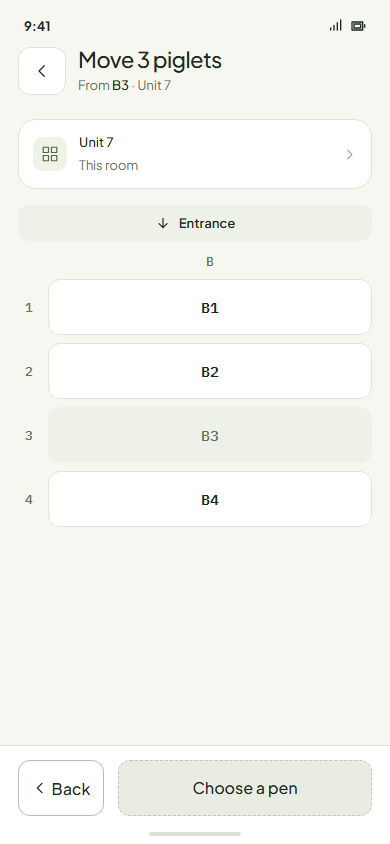
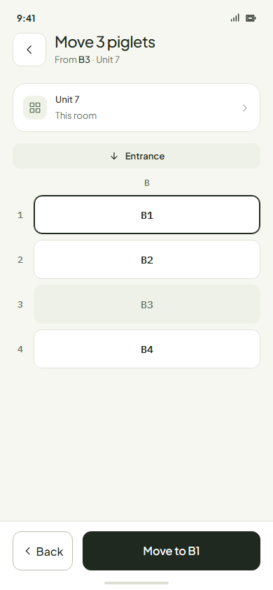
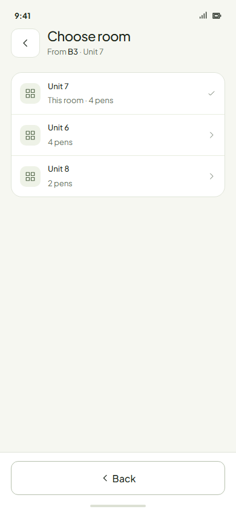
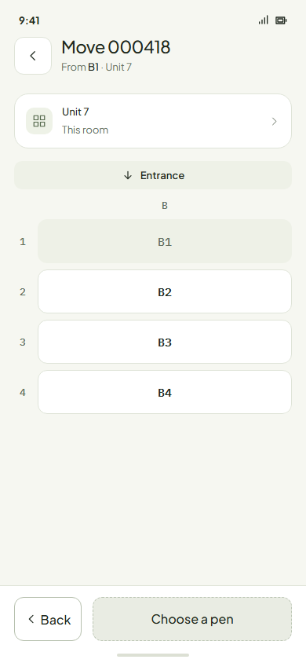
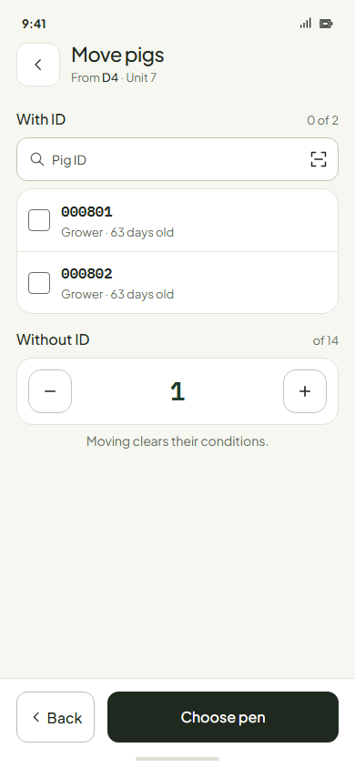
The pen page gets a Move tile. Which pigs uses the same parts as Farrowing's Send piglets: tick the tagged ones (search or scan), count the rest. Choose pen opens the room's pen map, with the pigs' own pen greyed.
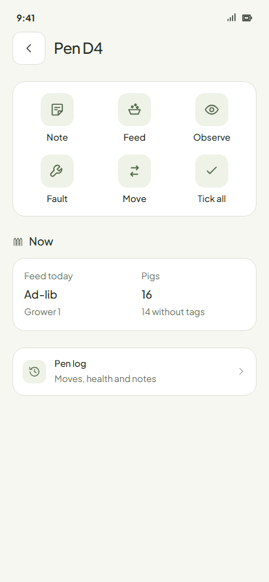
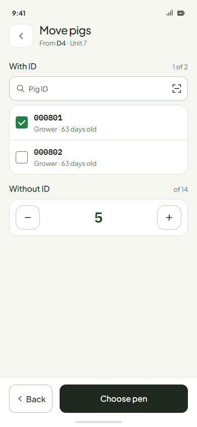
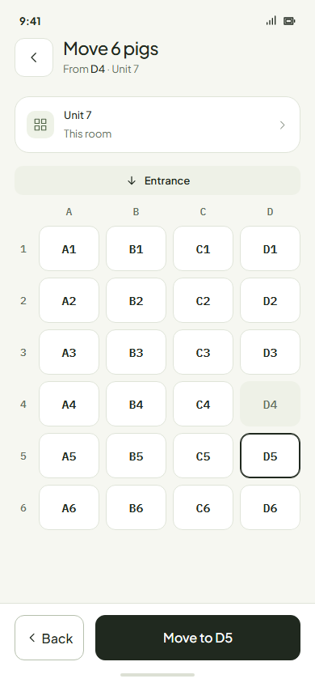
Tap a pen and the button says where: Move to C4. The map opens on the pigs' own room. The room row above it says which room and section it is ("Gestation · this room"). Tapping it lists every room grouped by section. The section the pigs are in always comes first, with their room at the top, then the other sections, so another room is one tap away (Hospital here). You land back on the pen page: its count drops, both pens' logs get a line, and a toast confirms.
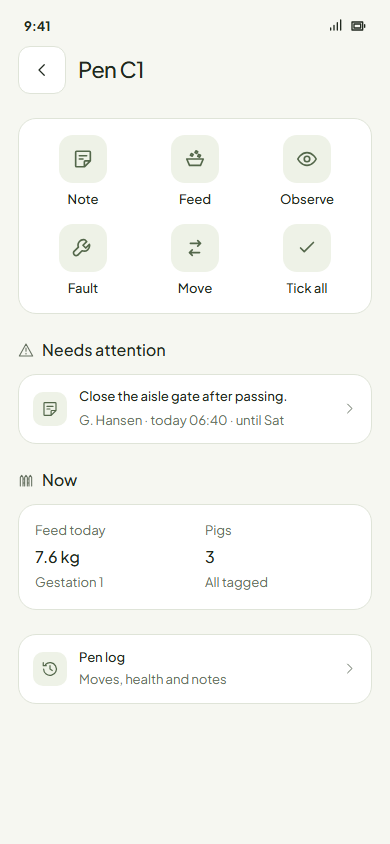
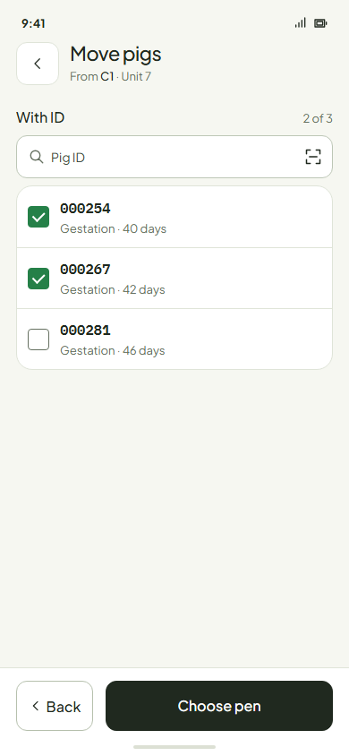
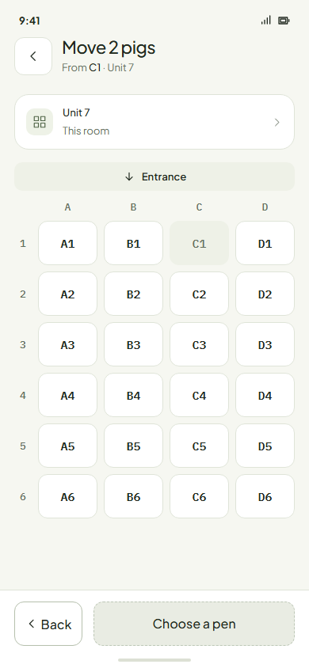
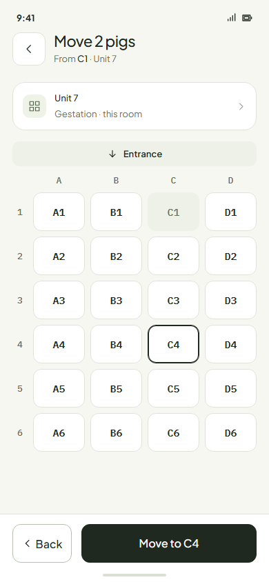
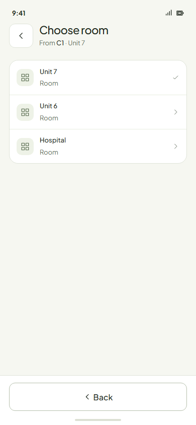
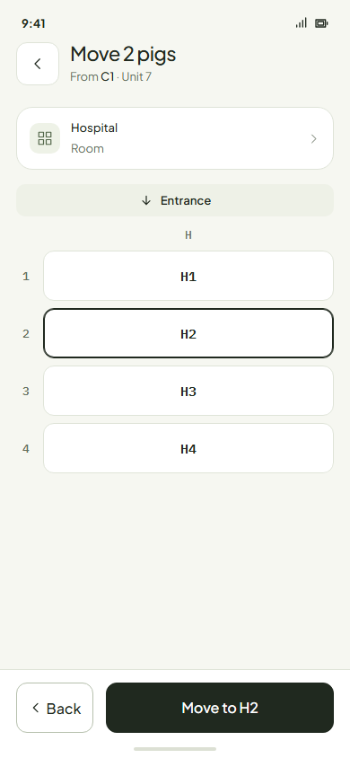
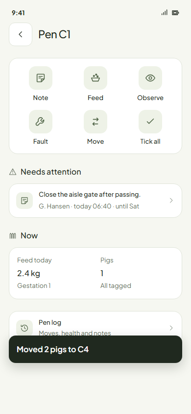
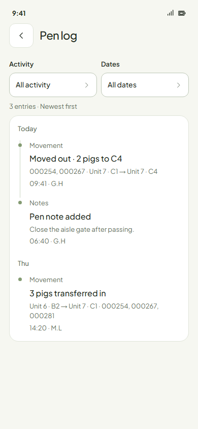
A single pig's Actions → Move goes straight to the pen map: there is nothing to choose. Pigs ticked on the walk (the without-ID row with its count too) also skip Which pigs, because the ticks already say which.
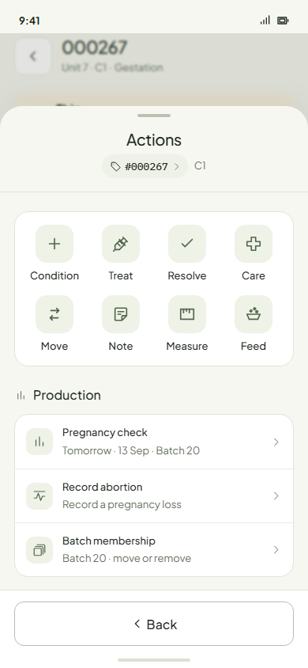
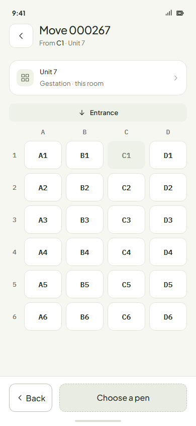
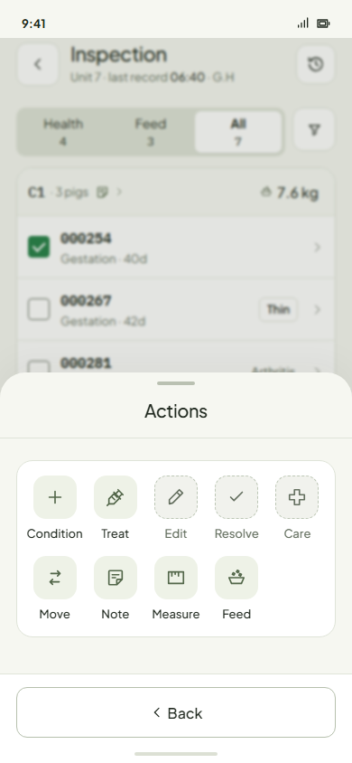
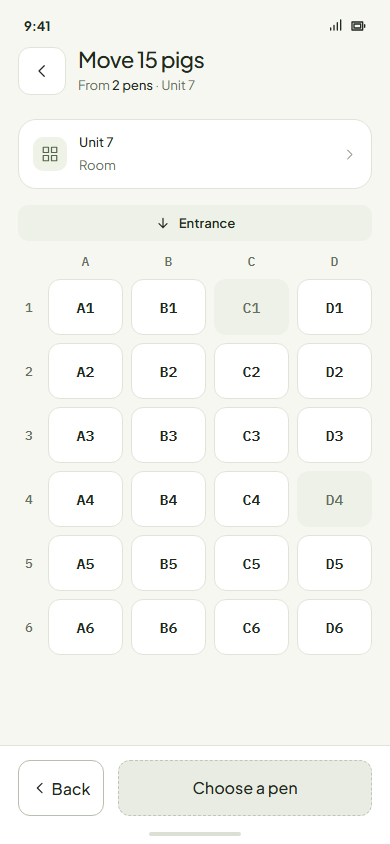
The Actions tile said Transfer and only gave a "not designed yet" toast. Farrowing's sow move was two dropdowns. Both now open the same To pen step.
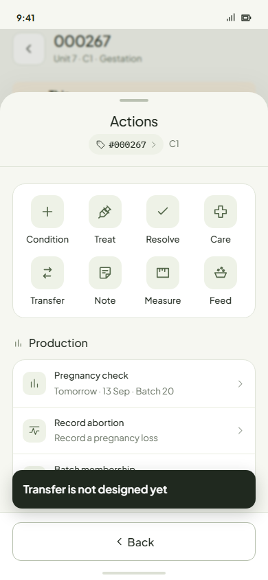
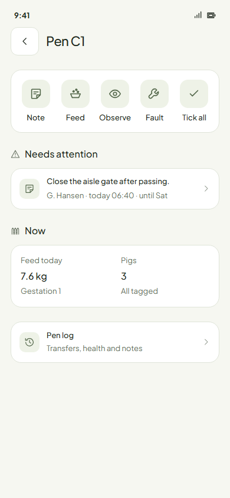
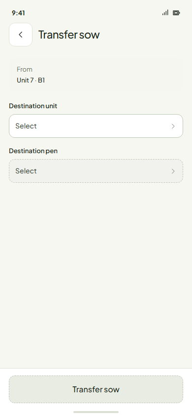
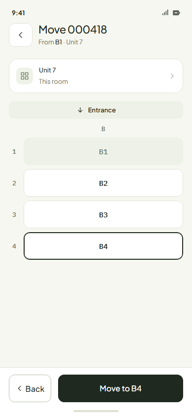